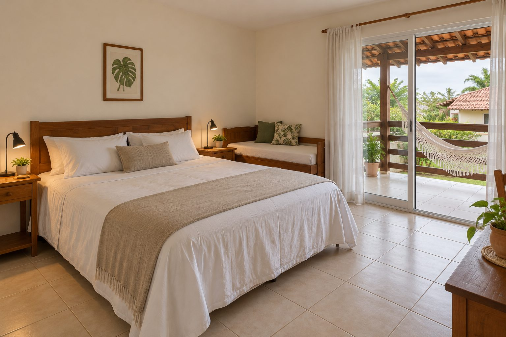

Ideal para casais
Quarto Aurora
No andar de cima da casa principal. A porta de vidro abre direto para a varanda com rede, voltada para o jardim. É a categoria mais procurada, principalmente por casais.
- 26 m²
- Até 3 pessoas
- Cama king + bicama
- Varanda com rede
- Vista para o jardim
- Cofre